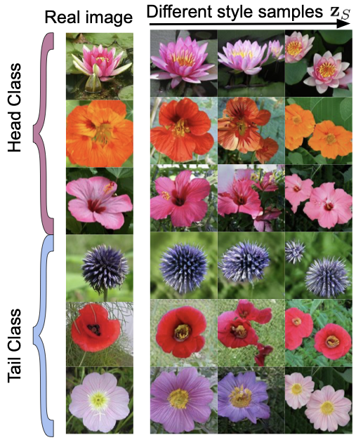
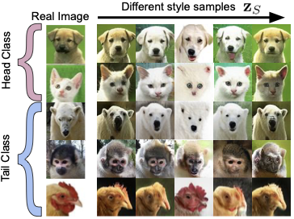
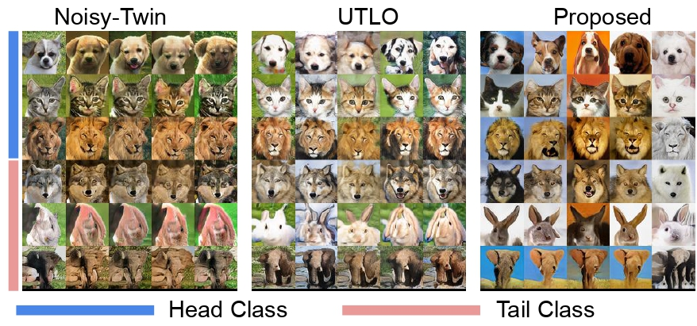

Long-Tail Class Generation via Content-Style based Transfer Learning
The Problem
Real-world image datasets are almost never balanced. A handful of head classes carry the bulk of the samples, while a long list of tail classes have only a few. When a class-conditional generative model — e.g. a conditional GAN (cGAN) — is trained on such data, two failure modes appear:
- Mode collapse on tail classes. The generator produces near-identical outputs for any tail-class condition; diversity vanishes.
- Drop in fidelity. Tail samples look distorted or unrealistic, even when head-class samples look great.
The natural way out is knowledge transfer from head to tail: similar classes (e.g. dog breeds) share most of their generative process, so the few samples we have for a tail class should benefit from the abundant samples of nearby head classes. Most prior work — GSR-GAN[2], Transitional GAN[3], Noisy-Twin[4], UTLO[5] — implements this idea with heuristics on architecture, regularization, or training schedules. We instead ground the knowledge transfer from head to tail transfer in a principled content-style generative model that explictly separates what is shared across all classes (content) and what is class-specific.
Setup
We have $N$ classes split into $M$ head classes (abundant data) and $N-M$ tail classes (scarce data). For class $n \in [N]$ we observe a dataset $\{ \bx_i^{(n)} \}_{i=1}^{D^{(n)}}$ with $D^{(n)}$ samples. The imbalance ratio is $\rho = D^{(1)} / D^{(N)}$. Our goal is to learn a single generative model that produces high-fidelity, diverse samples for every class — including those with only a few real images.
Proposed Formulation
Content–Style Generative Model
We model every image as a composition of two latent factors:
- The content $\bc$ — semantics shared across all classes (e.g., the pose of an animal face, the layout of a flower).
- The style $\bs^{(n)}$ — class-specific appearance (e.g., fur texture for a particular breed, petal color for a particular flower species).
where $\bg : \mathcal{C}\times\mathcal{S}^{(n)} \to \mathcal{X}^{(n)}$ is a (smooth) bijection. To make the two latent distributions trainable, we transport standard Gaussians through learnable encoders:
The same style function $\be_{\rm S}$ is reused across all classes; the only thing that distinguishes class $n$ is its embedding $\bw_n$. Crucially, we ask $\be_{\rm S}$ to be smooth in $\bw$:
This Lipschitz constraint is the formal expression of "tail classes look similar to nearby head classes": small movements in class embedding space produce small changes in generated style for a given random noise $\bz_{\rm S}$. It is what enables transfer from head to tail.
Why Smoothness, and why sharing content and style encoder with the head classes?
With the shared modeling and the smoothness constraint, the head classes alone determine $\be_{\rm C}(\cdot)$ and $\be_{\rm S}(\cdot, \bw_h)$ for $h\in[M]$, since they have enough data for distribution matching. Smoothness then help learn $\bw_h$ for the tail classes pulling it closer to the head classes. This also means style space $\mathcal{S}$ is connected and smooth across all classes.
Conceptual Loss
We use the Generative Adversarial Network (GAN) to instantiate the content-style generative model. Combining the GAN distribution-matching with the smoothness constraint and an embedding encoder $\bh$ that ties latent embeddings to images, the conceptual loss is:
Practical Implementation
For training we replace the hard smoothness constraint with a soft Jacobian regularizer:
where $J_{\be_{\rm S}}$ is the Jacobian of $\be_{\rm S}$ with respect to $\bw$. The Jacobian Frobenius norm directly upper-bounds the Lipschitz constant. To avoid materializing a full Jacobian, we use a cheap finite-difference estimate:
The full training objective is the cGAN loss plus $\lambda_j\,\cR(\be_{\rm S})$. We use the StyleGAN2-ADA[1] backbone for $\bg,\bd$ and two separate mapping networks for $\be_{\rm C}$ and $\be_{\rm S}$.
Visualizing What the Model Learns — Does the Model Actually Recover Tail Classes?
With identifiable content and style, we can hold the content noise $\bz_{\rm C}$ fixed and sweep across class embeddings to inspect how style varies. The figures below verify the theorem qualitatively: the same content (pose, layout) is preserved while only style (texture, color, breed) changes across classes — including tail classes that had only 2–4 real samples.


Figure 1. Validation of the identifiability theorem: a fixed $\bz_{\rm C}$ across all images yields consistent content while style varies smoothly with the class embedding $\bw_n$.

Results
Datasets
We evaluate on four widely used long-tailed benchmarks. Tail-class size is what matters most — Flowers-LT for instance has tail classes with as few as 2 images.
| Dataset | $N$ | Resolution | $\rho$ | $N-M$ (tail) |
|---|---|---|---|---|
| AnimalFaces-LT | 20 | 64 × 64 | 25 | 10 |
| CIFAR100-LT | 100 | 32 × 32 | 100 | 30 |
| CIFAR10-LT | 10 | 32 × 32 | 100 | 4 |
| Flowers-LT | 102 | 128 × 128 | 100 | 52 |
Table 1. Long-tailed benchmark statistics. $\rho$ is the head-to-tail ratio.
Metrics
FID and KID applied to a long-tailed dataset are dominated by the head classes and can hide tail-class failure. Following UTLO[5], we report:
- FID-few / KID-few — computed against an equal number of real images per tail class, isolating tail-class quality.
- FID-all / KID-all — standard scores over the entire dataset (50k generated images).
Table 2 — FID-few and FID-all
| Method | AnimalFaces-LT | CIFAR100-LT | CIFAR10-LT | Flowers-LT | ||||
|---|---|---|---|---|---|---|---|---|
| FID-few | FID-all | FID-few | FID-all | FID-few | FID-all | FID-few | FID-all | |
| StyleGAN2-ADA | 123.4 | 79.1 | 28.5 | 12.6 | 23.0 | 9.1 | 19.0 | 12.3 |
| GSR | 128.9 | 87.5 | 30.3 | 15.9 | 20.1 | 8.9 | 25.9 | 16.2 |
| Transitional | 69.6 | 35.5 | 26.9 | 11.2 | 21.2 | 8.7 | 24.7 | 14.1 |
| Noisy-Twin | 55.7 | 34.2 | 26.8 | 10.3 | 18.7 | 8.7 | 20.6 | 11.5 |
| UTLO | 50.7 | 29.4 | 27.5 | 11.7 | 19.2 | 8.6 | 17.3 | 10.1 |
| Proposed | 42.4 | 25.3 | 24.3 | 8.7 | 17.3 | 7.3 | 16.7 | 10.1 |
Table 2. FID-few and FID-all (lower is better) across four datasets. Bold = best, underline = second.
Table 3 — KID-few and KID-all (× 10³)
| Method | AnimalFaces-LT | CIFAR100-LT | CIFAR10-LT | Flowers-LT | ||||
|---|---|---|---|---|---|---|---|---|
| KID-few | KID-all | KID-few | KID-all | KID-few | KID-all | KID-few | KID-all | |
| StyleGAN2-ADA | 54.7 | 30.8 | 12.3 | 5.3 | 9.2 | 3.3 | 3.3 | 2.7 |
| GSR | 32.6 | 23.3 | 17.2 | 7.6 | 7.9 | 4.2 | 7.4 | 5.7 |
| Transitional | 23.0 | 11.8 | 11.9 | 5.3 | 8.5 | 4.1 | 7.2 | 4.3 |
| Noisy-Twin | 21.2 | 13.6 | 11.5 | 4.3 | 6.0 | 2.3 | 5.1 | 3.5 |
| UTLO | 19.1 | 12.1 | 10.5 | 5.8 | 8.2 | 3.4 | 3.7 | 2.7 |
| Proposed | 10.8 | 7.4 | 9.1 | 2.9 | 5.8 | 2.0 | 2.5 | 2.4 |
Table 3. KID-few and KID-all (lower is better, ×10³).
What the Numbers Say
- Best on every dataset, on every metric. Proposed wins both the tail-focused (-few) and full-dataset (-all) variants of FID and KID across all four benchmarks.
- Largest gain on tail classes. On AnimalFaces-LT — the dataset with the smallest resolution-adjusted images and a real (not synthetic) imbalance — KID-few drops from 19.1 (UTLO) to 10.8, nearly halving the previous best.
- Tail improvements don't cost head fidelity. Proposed also has the lowest FID-all and KID-all, meaning the model isn't trading head-class quality for tail-class diversity — the content–style decomposition lets it improve both.
Summary
Long-tail class generation is hard because a few tail samples can't anchor distribution matching by themselves. By modeling images as a content–style decomposition with a smooth, class-conditioned style function, we get a single principled heuristic based on a content-style generative model that is easy to implement. In practice, a simple Jacobian-norm regularizer on the style mapping network implemented with a finite difference turns this into a measurable improvement: state-of-the-art FID and KID on AnimalFaces-LT, CIFAR-LT, and Flowers-LT.
References
- T. Karras, M. Aittala, J. Hellsten, S. Laine, J. Lehtinen, and T. Aila, Training generative adversarial networks with limited data (StyleGAN2-ADA). NeurIPS 2020. arXiv:2006.06676
- H. Rangwani, N. Jaswani, T. Karmali, V. Jampani, and R. V. Babu, Improving gans for long tailed data through group spectral regularization (GSR-GAN). ECCV 2022. arXiv:2208.09932
- M. Shahbazi, M. Danelljan, D. P. Paudel, and L. Van Gool, Collapse by conditioning: Training class-conditional gans with limited data (Transitional GAN). ECCV 2022. arXiv:2201.06578
- H. Rangwani, L. Bansal, K. Sharma, T. Karmali, V. Jampani, and R. V. Babu, “Noisytwins: Class-consistent and diverse image generation through stylegans ECCV 2022. arXiv:2304.05866
- S. Khorram, M. Jiang, M. Shahbazi, M. H. Danesh, and L. Fuxin, Taming the tail in class-conditional gans: Knowledge sharing via unconditional training at lower resolutions (UTLO). ICML 2023. arXiv:2402.17065